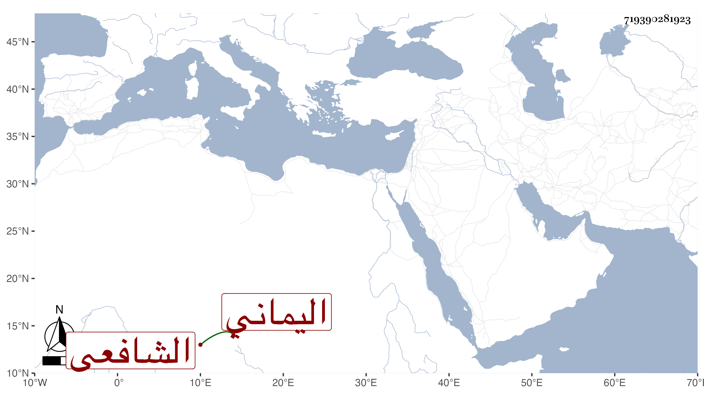

0902Sakhawi.DawLamic.ITO20230111-ara1.EIS1600.719390281923
Biography ID: 719390281923
166
عبد الله بن محمد بن أحمد بن أبي بكر بن علي بن محمد بن أبي بكر ابن عبد الله بن عمر بن عبد الرحمن بن عبد الله العفيف أبو محمد بن الجمال الطيب ابن الشهاب الناشري اليماني الشافعي الآتي أبوه . ولد سنة اثنتين وعشرين وثمانمائة وحفظ الشاطبية وألفية النحو والحاوي وتلا للسبع على قريبه عثمان الناشري وبه انتفع فيها في آخرين وفي النحو على جماعة ثم لازم والده فقرأ عليه الحاوي وسمع عليه التنبيه والمنهاج والروضة وتصنيفه إيضاح الفتاوى وناب عنه بل كان قائما بالأمور عنه حين أسن ثم استقل بعد موته لكن أخرج عنه على ابن طاهر بعد سنين الوقف للتقي عمر الفتى وغيره واستمر على القضاء خاصة حتى مات في ربيع الأول سنة اثنتين وثمانين رحمه الله .
